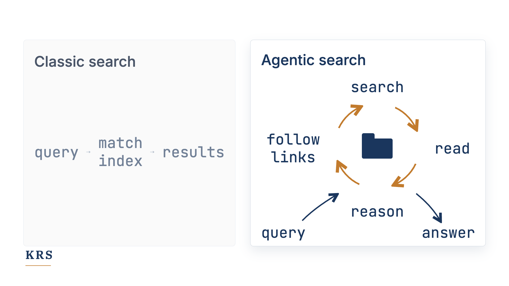

The Best Format for Company Knowledge Might Be a Folder of Markdown Files
Why a folder of Markdown files, structured with the Open Knowledge Format, works for humans and AI agents alike, and where its limits are.

Originally published on LinkedIn.

What is the best format to store your company's knowledge? For years the answer was PDFs and Word documents on a network share, a dedicated knowledge management system, or a wiki. Today I think the best answer is a folder of Markdown files, structured according to the Open Knowledge Format.
Why? Because the value of your knowledge base depends on how easily you can interact with it. There should be as little friction as possible between you and your ability to search through your documents, modify them, link them, reorganise them, or aggregate them in a new way. That should be true whether the one reading and writing is a human or an AI agent working on your behalf. A folder of Markdown files keeps that friction low, while staying expressive enough for most knowledge work.
Why Markdown
Markdown is a popular, lightweight markup language from 2004, created by John Gruber with Aaron Swartz. It is readable by almost every text editor and note-taking app. The basic syntax, which covers links, headings, lists, and simple formatting, can be learned quickly. Its original design goal was readability: a Markdown document should be legible as-is, as plain text, before it is ever rendered. That makes Markdown unusually durable. It is not tied to a single vendor, interface, database, or application. You can open it in a modern note-taking app, in a code editor, in a terminal, or in whatever tool comes next.
This matters even more now than it did a few years ago, because knowledge bases are no longer only read by humans. They are increasingly read, searched, modified, and maintained by AI agents, which happen to be very good at working with this shape of knowledge. They can search across folders, follow links, inspect nearby files for context, update multiple documents after a change, and create new summaries or indexes when needed. Markdown is also the format large language models tend to use by default when asked to produce structured text. In that practical sense, it is very close to their natural working format.
What the Open Knowledge Format adds
Knowledge is best stored as a network of connected information. Think of Wikipedia, and how links in one article point to others. Once you have many Markdown files, each representing an individual node in that network, you need some form of organisation to manage them. That is where the Open Knowledge Format (OKF) comes in. It is a new open specification that Google Cloud published in June 2026, and it standardises how to represent knowledge as a folder of Markdown files. Under the hood it describes a simple frontmatter syntax and a few naming conventions, nothing more. It is deliberately minimal.

OKF is still very new, yet it makes immediate sense because it codifies what a lot of people were already doing. In Obsidian, a popular note-taking app, personal knowledge lives in a nested folder of Markdown files. The same pattern is visible in the way coding agents work with project memory and long-term context. Claude Code, Codex, and other coding agents rely heavily on Markdown files to store instructions, context, and project knowledge. The Open Knowledge Format takes lessons from these applications and gives them a shared structure.
Built for AI agents
The strong coupling with AI agents is the single best argument for OKF. Coding agents already know how to read and write exactly this shape: a folder of text files with meaningful names, links, and lightweight metadata. Store your company's knowledge the same way and it becomes much easier for agents to work with it directly. There is no need for a custom connector, no special ingestion step, and no dependency on a proprietary API. An agent can combine classic command-line text search with its own reasoning, inspect the relevant files, follow links, and continue the search from there. What you get behaves less like a static search box and more like a very capable research assistant: probably not always the fastest, but often strong on depth, because it can read and reason in a loop rather than only matching an index.

At KRS we adopted this shape from the very beginning, both for our internal knowledge and for the knowledge bases we build for customers. I have used Obsidian as my personal knowledge system for years. So the decision to adopt OKF was straightforward: we were already 99% there, and it makes little sense to keep an internal proprietary knowledge format when an open one is only a tiny step away.
Caveats
There are caveats, of course. A plain folder of Markdown files has no version history on its own. You get that as soon as you keep it in a version control system like Git, which then gives you a full change history, diffs, and the ability to roll back, all of which matter once a team depends on that knowledge. For very large knowledge bases you will need to reintroduce a dedicated search index, so the agent stays within its context and latency budget. Governance is another challenge. If granular access control matters in your organisation, you will need to restrict access at least on a per-file basis. But if that is a real constraint in your domain, you have probably already established rules and platforms to govern documents; here the friction in the system simply rises, and by necessity.
Finally, not everyone wants to, or can, use coding agents to interact with a knowledge base. Then you need another interface for search and navigation. Obsidian ships with one. Chatbot solutions usually come with a RAG engine, and OKF should be very easy to ingest into such a system.
Conclusion
All things considered, I believe a folder of Markdown files is one of the simplest and most flexible ways to manage a company knowledge base today. It stays fully under your control, can be hosted locally, and is readable and editable in any text editor. It is expressive enough for the concepts you expect from documents: links, tables, code snippets, metadata, and formatting. It works well with Git, it is easy for humans to inspect, and it is easy for AI agents to process. And because it is open, portable, and deliberately boring, it is likely to outlast many of the interfaces and tools we currently use to access it.
This is, I think, exactly how you want to store your knowledge today.